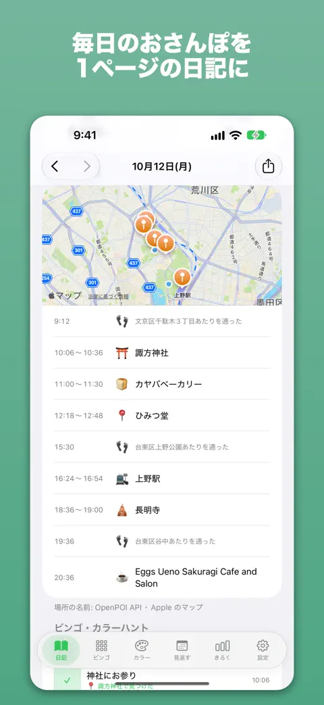
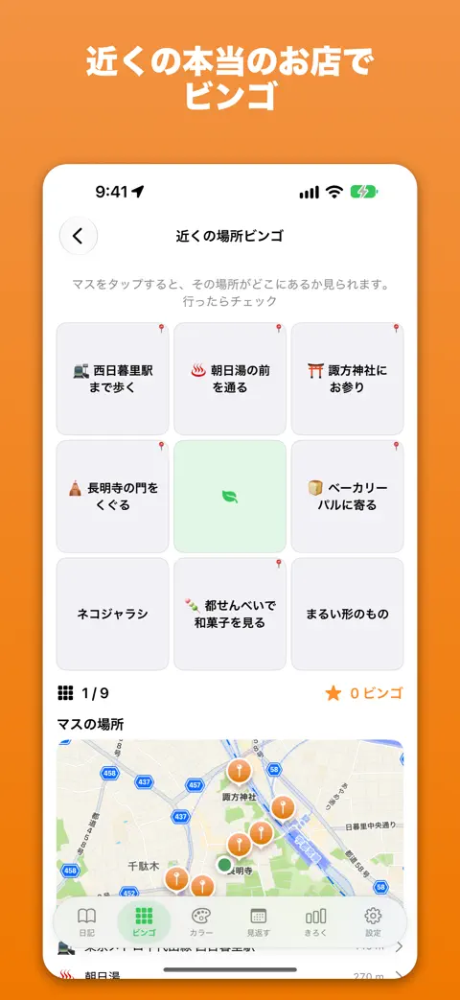
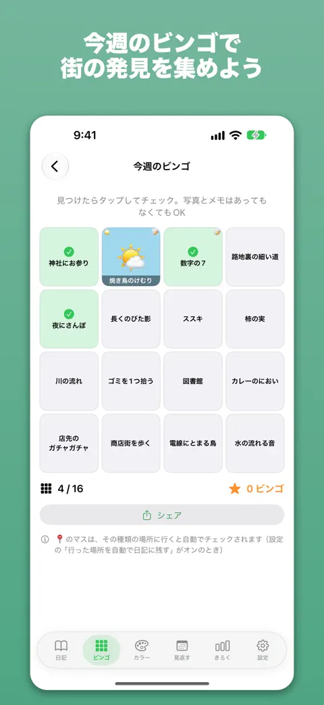
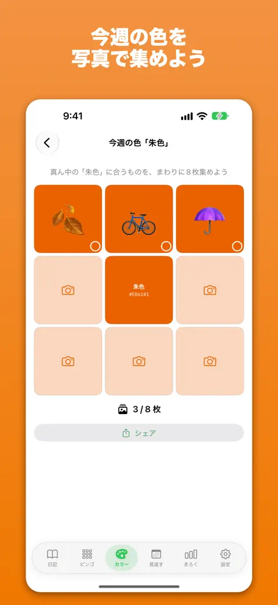
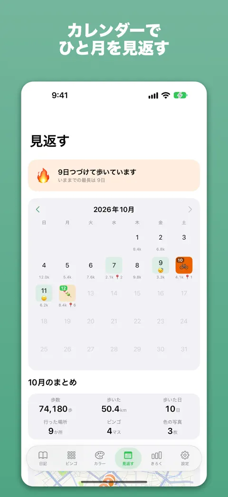

お散歩の日記アプリ（iPhone）
おさんぽ日記
いつものおさんぽが、
ビンゴと日記になる。
その日の歩数と行った場所が、自動で1日1ページに。近くにある本当の神社・パン屋・公園でビンゴをしたり、今週の色を写真で集めたり。歩くのが少し楽しくなるアプリです。
- 歩数を自動で表示
- 近くの場所ビンゴ
- 230以上のお題
- 会員登録なし
無料・バナー広告なし（動画は見たいときだけ）／iPhone（iOS 18 以降）





← 横にスクロールできます →
こんな人におすすめ
- 散歩やウォーキングを、楽しく続けたい人
- 近所の新しいお店や場所を見つけたい人
- 日記を手軽に残したい人
遊び方は3ステップ
- ひらく今日のページに、歩数と歩いた距離が自動で出ます。
- 歩くビンゴのマスの場所へ歩いて、見つけたらチェック。
- のこす気分・天気・ひとこと・写真を足せば、その日の日記のできあがり。
特徴
- 3×3近くの場所ビンゴ約1km以内の、本当にあるお店や場所で
- 4×4今週のビンゴ毎週月曜に新しいカード
- 230+のお題道ばたの自然・空と天気・季節・街の発見
- 8枚のカラーハント今週の色に合うものを写真で集める
日記・写真・行った場所の記録は、この iPhone の中に保存します。近くの場所を調べるときだけ、約500m四方のおおよその位置と検索語を OpenPOI API に送ります（設定でオフにできます）。
くわしい使い方
1日1ページの日記に、その日の歩数と行った場所が自動で並びます。近くにある本当のお店や場所でビンゴをしたり、今週の色を写真で集めたりできます。
- 日記：開くと今日のページ。‹ › で前の日・次の日へ。気分・天気・ひとこと・写真を書けます。ビンゴやカラーハントで見つけたものも、その日のページに並びます
- ビンゴ：毎週月曜に新しくなる「今週のビンゴ」（4×4）と、いまいる場所の近くの神社・パン屋・公園などで作る「近くの場所ビンゴ」（3×3）。マスをタップすると、その場所の地図と距離、マップアプリで歩く道順を開くボタンが出ます
- カラー：今週の色に合うものを写真で8枚集めます
- 見返す：月のカレンダーと、今月のまとめ（歩数・距離・行った場所・ビンゴ・集めた色・写真）
- きろく：この1週間のグラフと、これまでの合計・連続記録
- 設定：行った場所を自動で日記に残す・近くの場所を使う（OpenPOI）・毎日のお知らせ
よくある質問
無料ですか？
はい、無料でダウンロードして遊べます（バナー広告なし（動画は見たいときだけ））。App Store のページからどうぞ。
どの端末で使えますか？
iPhone（iOS 18 以降）で使えます。Android 版はありません。
歩数が表示されない
設定アプリの「プライバシーとセキュリティ」→「モーションとフィットネス」で、おさんぽ日記をオンにしてください。iPhone の歩数計は7日前までしかさかのぼれないため、それより前の日は、アプリを開いたときに控えた歩数だけが表示されます。
行った場所が日記に出ない
設定タブの「行った場所を自動で日記に残す」をオンにして、位置情報を「常に」にしてください（設定アプリの「位置情報」→「おさんぽ日記」）。iPhone の省電力のしくみ（訪問の検出・大きな移動の検出）を使うため、しばらくいた場所だけが記録され、数分おくれて届くことがあります。「正確な位置情報」がオフだと、場所がずれたり見つからないことがあります。
電池の減りが心配
行った場所の記録には、GPS をずっと動かすのではなく、iPhone がもともと持っている省電力のしくみだけを使っています。気になるときは、設定タブでいつでもオフにできます。
近くの場所ビンゴのお店がまちがっている・ない
近くの場所は OpenPOI API（日本の施設データ）と Apple のマップから探しています。名前から種類を見分けているため、まれにちがう種類の場所が入ることがあります。「いまの場所で作り直す」で作り直せます。データは約500m四方ごとに24時間保存しているので、設定タブの「調べた場所の一時データを消す」で消すと最新のデータで作り直せます。
データを消したい・引き継ぎたい
日記・写真・行った場所の記録は、この iPhone の中にだけ保存しています。アプリを削除すると記録も消えます。ほかの端末への引き継ぎにはまだ対応していません。
場所のデータ
近くの場所の名前と位置は OpenPOI API のデータを使っています（出典の詳細はリンク先をご覧ください）。地図・場所の名前の一部は Apple のマップを使っています。
お問い合わせ
不具合やご要望は、メールでお知らせください。お使いの iPhone の機種と iOS のバージョンを書いていただけると助かります。